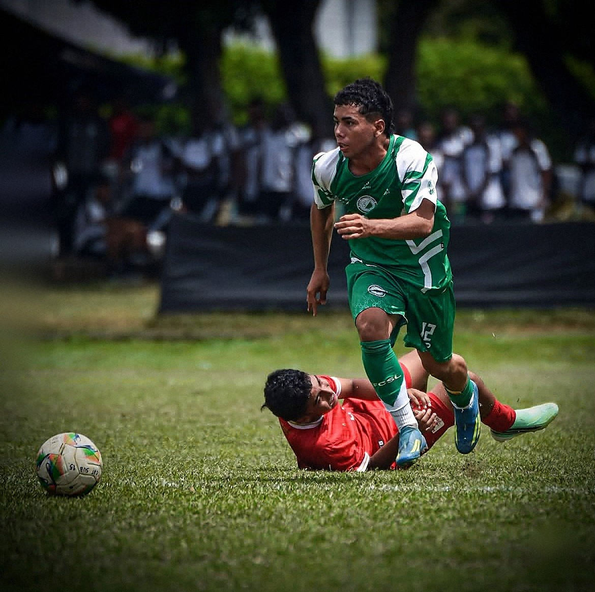

Matías Román Vides Fuentes
Extremo por ambos perfiles, pierna hábil derecha
Izquierda: pierna cambiada, entra hacia el centro.
Derecha: pierna natural, desborda y centra.
Escanea el código o haz clic en el enlace. El perfil incluye el video completo y esta ficha.
alejoamorocho.github.io/matias-vides